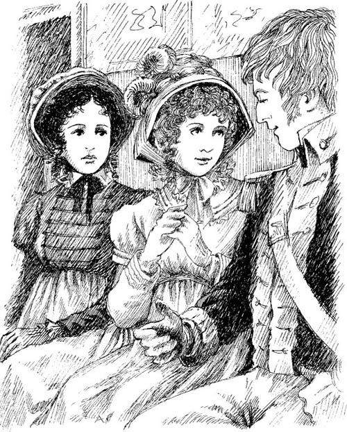

Isabella và James
Ngày thứ Hai, James Morland đã trở lại Bath. Sáng thứ Ba, Catherine gặp Isabella ở phòng bơm hơi.
Isabella nói 'Catherine thân mến, đến ngồi xuống đây với chị đi. Chị muốn nói chuyện với em.'
Họ ngồi xuống chiếc ghế dài nằm ở khoảng giữa của hai cánh cửa. Đôi mắt Isabella lúc nhìn cửa này, lúc ngước sang cánh cửa kia.
Catherine mỉm cười: 'James sẽ sớm quay lại đây thôi.'
Isabella đáp, 'Tại sao em lại nghĩ tới anh ta. Chị không hề để ý đến James, cũng chưa từng để mắt tới bất kỳ ai.'
Rồi Isabella tiếp, 'Nhân lúc này chị muốn cho em biết một chuyện. Hôm nay John có viết thư gửi tới cho chị đấy. Nội dung toàn nói về em.'
Ngạc nhiên, Catherine hỏi lại, 'Em ư, bức thư đó nói về em ư? Vì sao anh trai chị lại phải viết về em cơ chứ.'
Isabella bảo: 'Em gái, John đã yêu em mất rồi. Cậu ấy từng nhắc tới em - vào trước ngày cậu ấy rời thành phố Bath.'
Catherine nói, 'Chị, em chẳng hiểu gì cả. Phải có nhầm lẫn ở đây rồi. Mong chị thứ lỗi. Nhưng em thực sự không hề có tình cảm với anh ấy.'
Bất giác, Catherine trông thấy thuyền trưởng Tilney. Anh đi thẳng về hướng hai chị em rồi tới ngồi xuống bên cạnh Isabella.
Anh thốt lên, 'Cô không khi nào đi đâu mà lại chẳng có bạn bè đi bên cạnh hết.’Anh ấy hỏi, ‘Liệu tôi có dịp nào được ngồi riêng với cô không?'
Isabella cười và hỏi: 'Anh tìm chị để làm gì, nếu muốn thì cứ trả lời thẳng đi.'
Catherine thấy kinh ngạc vô cùng. Phải chăng Isabella thích thuyền trưởng Tilney? Nhưng mà Isabella chuẩn bị kết hôn với James cơ mà?


Suốt ba ngày tiếp theo, Catherine đều để ý tới cô bạn của cô một cách cẩn thận hơn trước. Thuyền trưởng Tilney lúc nào cũng xuất hiện gần gũi bên Isabella. Và cô lúc nào cũng đang trò chuyện với anh ta nhưng lại chỉ toàn lơ James đi. Điều đó khiến cho anh vô cùng buồn bã.
Catherine kể cho Henry Tilney về chuyện này,
Cô đề nghị, hãy nói với thuyền trưởng Tilney về Isabella cũng như James, họ đã chuẩn bị kết hôn.
'Anh ta biết hết rồi,’Henry đáp lại, ‘Bản thân tôi kể cho anh ấy hay mà.'
Catherine đáp ngay : ‘Thuyền trưởng Tilney nên rời khỏi Bath. Đừng để cho anh chàng này đứng bên Isabella mà nói chuyện nữa chứ. Anh ta đã khiến cho James -em trai tôi - không được sung sướng chút nào.'
Henry Tilney hỏi thêm, 'Thế còn bản thân Isabella? Cô ta có hay trò chuyện với Frederick, còn khiêu vũ thì sao, có phải cùng với Frederick. Mỗi hành động của cô ta không phải cũng đang khiến cho chàng trai của cô đau khổ lắm ư?'
Bình tâm lại, Catherine nhẹ nhàng nói: “Đúng thật, việc làm như vây của chị Isabella không nên chút nào.'
Henry nói: ’Chắc anh cũng sẽ sớm rời thành phố Bath. Trong thời gian không dài nữa, anh sẽ lãng quên Isabella. Và chắc hẳn khi ấy James của em đã vui trở lại.'
Đó là buổi đêm ở thành phố Bath cuối cùng của Catherine. Gia đình cô cùng với James dùng bữa tiệc tối với gia đình Thorpes. Khi đó, Isabella dành cho em trai cô thái độ vô cùng tốt bụng nên anh ấy rất vui. Tình hình thật ổn.
Sáng hôm sau, ông Allen chở Catherine đến Phó lộ Millson. Gia đình Tilneys lên đường vào lúc mười giờ.
Đoàn xe của gia đình Đại tướng Tilney ra đi sớm nhất. Bên trong chiếc xe đầu chở Eleanor và bố, còn bên trong chiếc kia chở Catherine cùng Henry ở hàng ghế phía trên. Đoàn xe cứ thế từ từ di chuyển tới Bath. Cô gái đang hướng về Tu viện Northanger!
Mục lục
- Trang tiêu đề
- Trang bản quyền
- Mục lục
- Ghi chú về tác giả
- Ghi chú về truyện này
- Những người trong truyện này
- 1 Catherine đến Bath
- 2 Những người bạn mới của Catherine
- 3 John và James
- 4 Bữa tiệc khiêu vũ ở Upper Rooms
- 5 'Tại sao anh lại nói dối em?'
- 6 Catherine và gia đình Tilney
- 7 Isabella đang yêu
- 8 Đại úy Frederick Tilney
- 9 Isabella và James
- 10 Tu viện Northanger
- 11 'Em thân mến, cô Morland!'
- 12 Thăm Woodston
- 13 Bức thư từ Isabella
- 14 Catherine trở về nhà
- 15 'Em sẽ lấy anh chứ?'